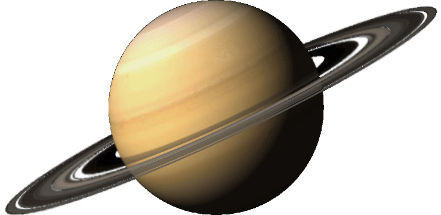

Saturno

Saturno "el planeta anillado". Es una gran bola de gas con una masa casi 95.1 veces la de la Tierra y un volumen 755 veces mayor. Posee el sistema de anillos más complejo y se extiende a través de cientos de miles de kilómetros. Pertenece al grupo de los planetas gaseosos. Es el sexto planeta más alejado del Sol y el segundo planeta situado después del cinturón de asteroides. Completa una órbita alrededor del Sol en 29 años terrestres.
Saturno tiene 53 satélites y otros 9 están por confirmarse. El más grande de estos satélites es Titán, que es el segundo más grande del Sistema Solar.
Carece de superficie sólida. Está compuesto principalmente por hidrógeno y helio y su interior es posiblemente similar al de Júpiter, con un núcleo denso de roca, hielo, agua y otros compuestos sólidos. Está rodeado de hidrógeno metálico líquido dentro de otra capa de hidrógeno líquido. Su campo magnético es 578 veces más potente que el de la Tierra.
Masa: 6832 x 1026 kg.
Volumen: 8.2713 x 1014 km3.
Densidad: 0.687 g/cm3.
Diámetro: 120, 660 km.
Temperatura efectiva: -178 °C